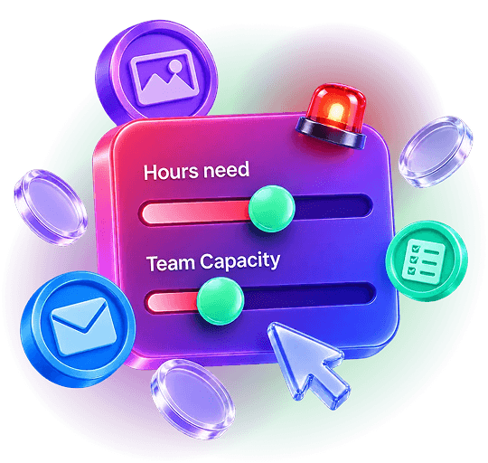

Get your real design capacity number
A free interactive tool to diagnose your design capacity. Put in a number, and we'll do the calculation for you: see if you're short, by how many hours, and which solution fits.
- Enter your numbers, we do the maths
- See your hours gap, live
- Get the solution that fits, and your time back

Stop guessing. Start counting.
How many hours have you spent managing design, or even doing it yourself? Exactly. That's not your role, but you have to do it, otherwise the backlog just keeps piling up. It just happens: you don't even know if it's a capacity problem or an efficiency problem. What you know is that it's chaotic and causes burnout, for you and your team.
That's what this guide is about: ending that cycle. We'll help you diagnose the real issue step by step, so by the end you'll know your next step.
We use this framework to evaluate our own capacity every quarter. After a few years of refining it, we've found it's the most liberating way to find the real numbers and plan ahead. A few minutes of effort that saves you from unnecessary budget leaks. The final step will help you choose the right fit to close the gap.
Step 1: Count Your Monthly Design Needs
What are your ongoing design needs? Take your time with this one: getting the list right is the first step. Then map it across the slow season, the regular months, and the peak. Use the table below to work out the average hours each one needs.
| What You're Producing | Qty/Month | Avg Hours Each | Total Hours |
|---|---|---|---|
| Total | Production hours: | = 0h |
Step 2: Add the Working Margin
Realistically, design has never been just the design. Think about it: from the first brief to the delivered file, plenty of things along the way cost time.
| Where design time really goes | Why it matters |
|---|---|
| Read the brief and research | Nobody starts designing right away. The designer needs to read and understand the task first. Especially if it's not a repeat task, fresh research is needed to understand the context fully. |
| Exploration | The outcome may look simple. Sometimes the designer hits it right straight away. Other times, a few iterations are needed to get to the right one. |
| Revision | One or two revisions are common. But sometimes a change of direction or a new idea causes many more, especially on tasks with plenty of stakeholders involved. |
| Context switch | The most underrated one. The more tasks and revisions come in, the more cooldown a designer needs between them, so a bit of buffer helps. |
| Late additions | Extra sizes, formats, or versions asked for after approval. |
| Final file preparation | Every output needs to be prepared and uploaded. Then a typo shows up, and another round of fixing and re-uploading has to be accommodated. |
Now add those invisible activities to your time plan. On average, that takes around a 20% working margin. Then you get the real monthly need:
Calculated from your Step 1 total. Change a number above and this updates.
Count from a real month, not the plan. Figures are typical averages covering the full production cycle: brief review, design, self-checking, file preparation, and revisions within the estimate.
Step 3: Count Your Real In-House Hours
Full-time is 38 hours a week: about 165 hours a month contracted. Take out leave and public holidays first and about 150 attended hours remain. A designer's real working time is around 80% of that: meetings, seeking creative inspiration, and peer communication take the rest. So a full-time in-house designer's real hours:
| Who | How many | Real hours each | Total |
|---|---|---|---|
| Full-time designers | × 120 | = 0h | |
| Part-time designers | × days/wk | ÷ 5 × 120 | = 0h |
| Real monthly in-house hours | = 0h | ||
The ~120 figure lands in the same range as labour studies averaging 1,558 productive hours a year for full-time employees (Law Insider, Asana Anatomy of Work Index).
Step 4: Work Out Your Gap
Now bring the two numbers together: what your month demands, minus what your team can hold. And because demand moves with the calendar, your result also includes the busy season, at a 1.5x multiplier on your monthly need.
Computed from your Steps 1 to 3. Change any number above and this updates. Run it again every quarter: the number moves with the calendar. Your numbers save in this browser only: nothing is sent anywhere.
Solutions to Fill Your Gap
Now that you know your gap hours, these are our matching recommendations:
Hiring fits when
demand is high, steady, and mostly one kind of work: enough volume, every week, to keep a full-time designer busy.
A specialist freelancer fits when
you need one specific thing from someone excellent at exactly that thing outside your team's usual lane.
Ad-hoc services fit when
only your busy-period gap is real: a launch, an event season, one big project. An occasional spike needs occasional help.
A design subscription fits when
your regular-month gap is real: short even in an average month, across changing formats and channels. You get a design team, not just a designer: people who learn your brand and stay on it, a coordinator who checks every file and keeps every date, and the hours sized to your gap. The ongoing work covered, without the hiring or the managing.
Thanks for reading, and I hope this interactive tool helps!
Know someone buried in design work? Send them this page.
Leaning toward the subscription option? Let's talk.
We'll help you see if a design subscription is a real fit, within your number and your budget. If it is, the subscription gets you a design team running production for you, without the hiring.
Book my 15-minute callSources and method. Full-time hours use the Australian 38-hour standard week (Fair Work Act, National Employment Standards). Production benchmarks come from Andelo's estimate records across client briefs. The 20% working margin and the 80% working-time rate are Andelo planning standards, from running this framework on our own team every quarter.